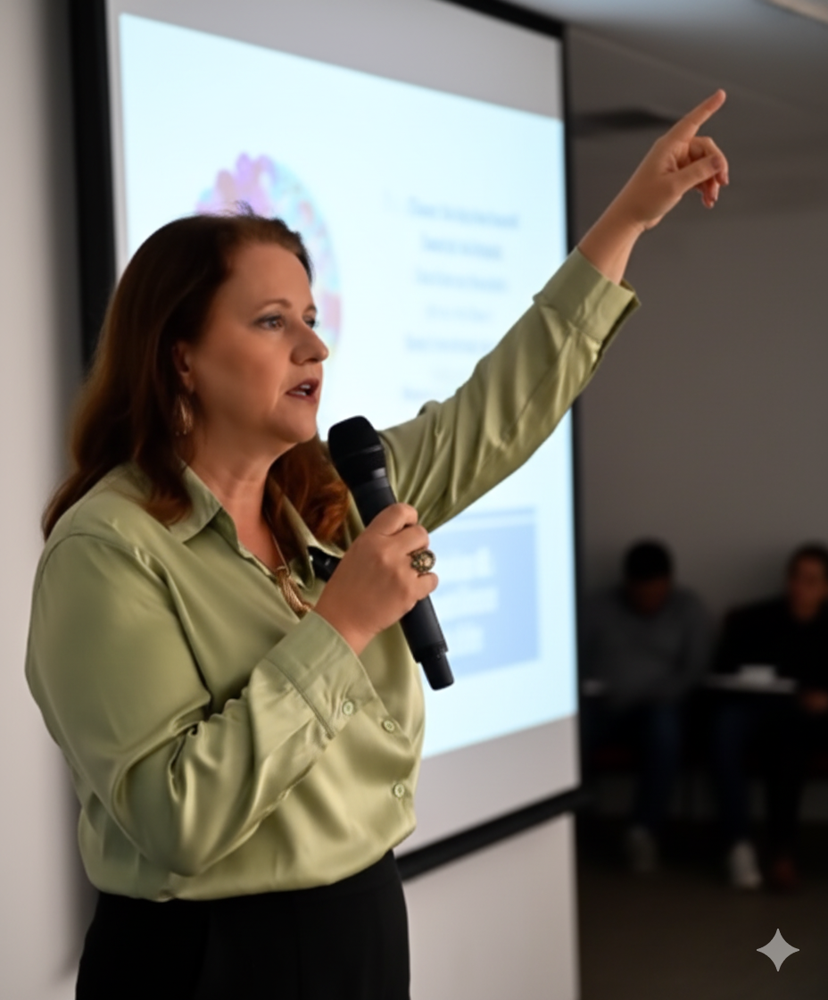

Clareza interna para decisões externas mais firmes, maduras e conscientes.
Existem momentos em que a emoção deixa de ser apenas sentimento e passa a interferir diretamente na qualidade das suas decisões, relações e posicionamentos.
A Sessão de Avaliação Emocional Estratégica foi estruturada para organizar aquilo que hoje está confuso — trazendo análise, clareza e direcionamento consciente.
A sessão é conduzida de forma analítica, objetiva e estruturada.
Ao final, você terá clareza sobre sua dinâmica emocional atual e poderá decidir conscientemente se deseja aprofundar o processo por meio de uma mentoria contínua.
Atuo como mentora emocional estratégica, conduzindo processos de análise profunda para pessoas que desejam tomar decisões com clareza, segurança e maturidade emocional.
Meu trabalho integra escuta qualificada, leitura analítica de padrões comportamentais e direcionamento estruturado — permitindo que você compreenda não apenas o que sente, mas como suas emoções influenciam suas escolhas.
Desenvolvi um método próprio de avaliação emocional que une profundidade, racionalidade e responsabilidade afetiva.
Não se trata apenas de falar sobre sentimentos. Trata-se de organizar internamente para decidir externamente com firmeza.

Os atendimentos são conduzidos com número restrito de vagas, priorizando qualidade, profundidade e acompanhamento estruturado.
Explore artigos sobre clareza, tomada de decisão e equilíbrio emocional.
Acessar meu Blog →